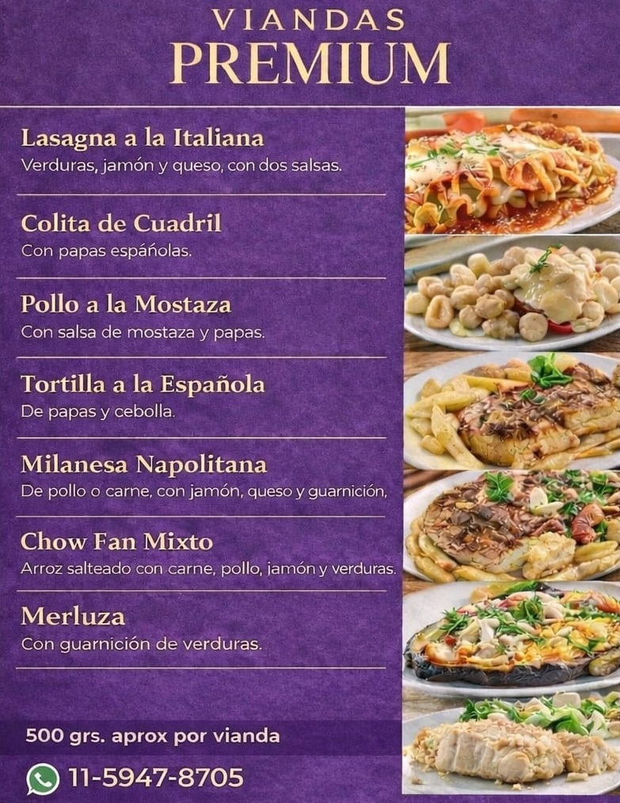
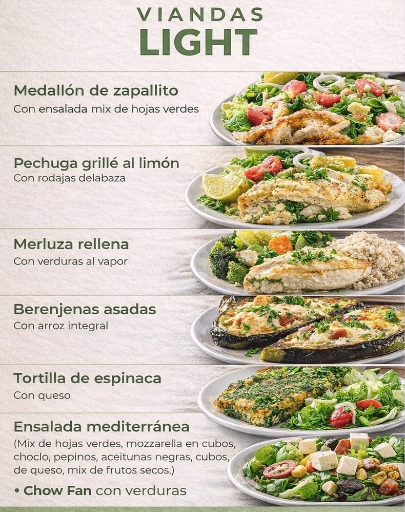
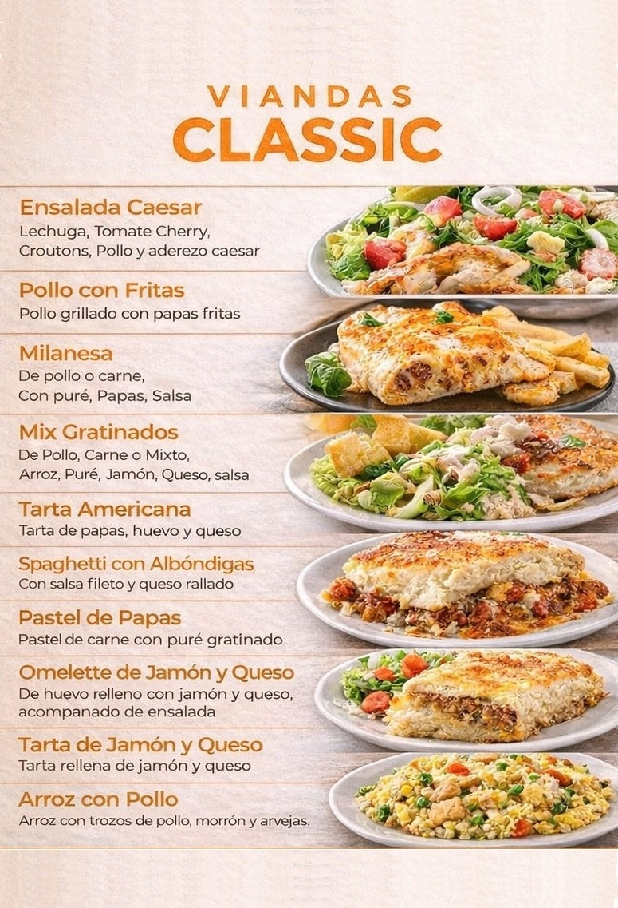
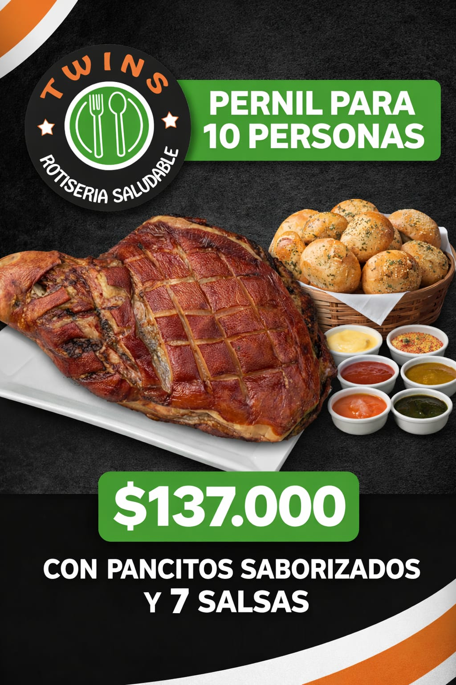
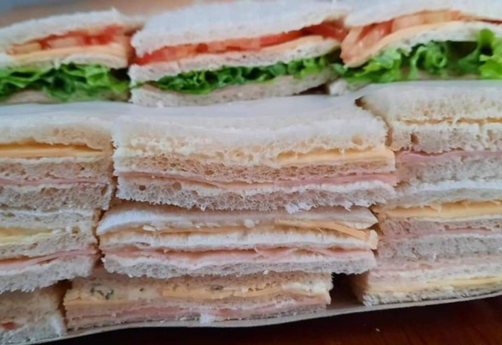
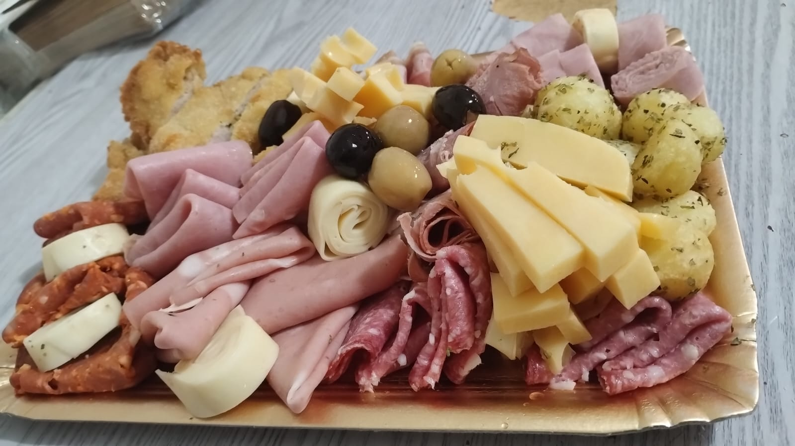

VIANDAS
Viandas semanales (mínimo 5), en porciones de 500 grs. aprox., ideales para el trabajo y también para tu casa. Elaboradas con ingredientes frescos y seleccionados cada día, sin conservantes ni saborizantes artificiales. Elegís el menú de la semana, coordinamos la entrega y vos solo calentás y disfrutás. Tres líneas para adaptarse a tu estilo: Especial, con platos elaborados y proteínas nobles; Light, con opciones bajas en calorías y alta nutrición; y Classic, con los clásicos de siempre que nunca fallan.


CATERING
Opciones para compartir con armado artesanal, pensadas para reuniones, eventos, celebraciones y toda ocasión.

Pernil para tu reunión
Ideal para toda ocasión, eventos, juntadas familiares, grupos de trabajo. Incluye 60 panes saborizados artesanales y 7 salsas exclusivas.
Consultar Catering
Sándwiches de miga
Preparación artesanal, pan fresco y variedad de sabores para compartir.
Consultar Catering

Picadas especiales
Diseñadas a la medida de tus invitados, con una selección de fiambres y quesos variados que satisfacen todos los gustos.
Consultar Catering